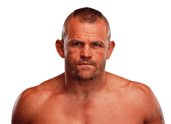

Chuck Liddell es un legendario peleador estadounidense de artes marciales mixtas (MMA), conocido por su estilo agresivo y su capacidad de nocaut. Nació el 17 de diciembre de 1969 en Santa Barbara, California, Estados Unidos. Fue campeón de peso semipesado de UFC y uno de los mayores íconos de la organización durante los años 2000. Su técnica combinaba striking poderoso con un excelente control en el clinch, convirtiéndolo en uno de los peleadores más temidos de su época.

Otros que podrían interesarte: